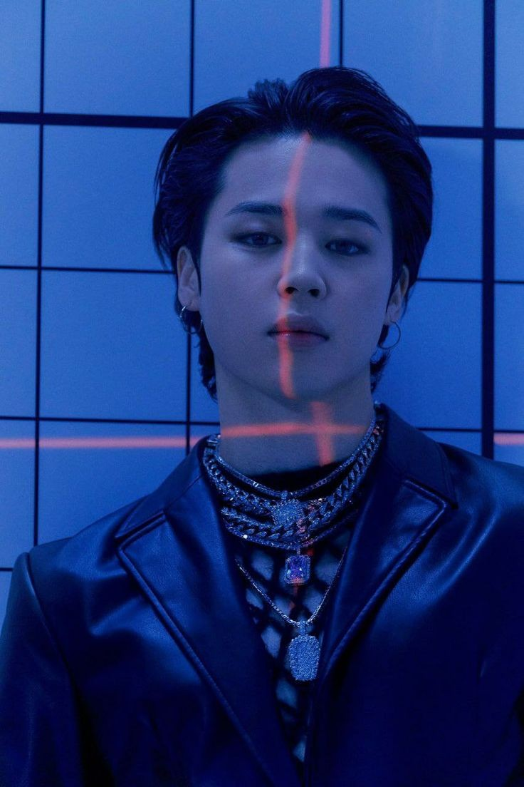

The youngest and the second most credited artist in the association history
“It’s like I’m at another time and space, feels like when I first loved dancing, the stage is the world that heals me.”
–Jimin, 2017.07.02, Japan.
Park Ji-min (박지민), better known by the mononym Jimin (지민), is a South Korean singer-songwriter and record producer under Big Hit Music. He is a member in the boy group BTS, and has the positions of vocalist and dancer.
As a solo artist, he has released two self-composed digital singles, "Promise" in 2018 and "Christmas Love" in 2020. He then made his official solo debut with his first mini album FACE on March 24, 2023.
LIFE AND CAREER
Early life and education
>
Jimin was born on October 13, 1995 in Geumjeong District, Busan, South Korea. His immediate family includes mother, father, and a younger brother. When he was a child, he attended Busan's Hodong Elementary School[7] and Yonsgan Middle School. During middle school, he attended Just Dance Academy and learned popping and locking dance. Prior to becoming a trainee, Jimin studied contemporary dance at Busan High School of Arts and was a top student in the modern dance department. After a teacher suggested he audition with an entertainment company, it led him to Big Hit Entertainment. Once he passed the auditions in 2012, he transferred to Korean Arts High School, graduating in 2014.
Jimin graduated from Global Cyber University in August 2020, with a major in Broadcasting and Entertainment. As of 2021, he is enrolled at Hanyang Cyber University, pursuing a Master of Business Administration in Advertising and Media.

BTS
On June 13, 2013, Jimin made his debut as a member of BTS with the release of the single "No More Dream". In the group, Jimin holds the position of vocalist and dancer. Under BTS, he has released three solo songs: "Lie", "Serendipity", and "Filter". "Lie" was released in 2016, as part of the group's second Korean studio album, Wings. It was described as stunning and dramatic, conveying dark undertones and emotions that helped reflect the overall concept of the album. In contrast, "Serendipity", released on the Love Yourself: Her (2017) extended play (EP), was soft and sensual, unraveling the joy, conviction, and curiosity of love. "Filter", from the group's 2020 studio album, Map of the Soul: 7, was very different from its predecessor, with a distinct Latin pop-esque flair and lyrics that reflected on the different sides of himself that Jimin shows to the world and those around him
]
"Serendipity" and "Lie" both surpassed fifty million streams on Spotify in 2018, followed shortly thereafter by the former's full length version from BTS' Love Yourself: Answer (2018) compilation album, which achieved the milestone in early 2019. With this, Jimin set a new record as the only Korean artist to have three solo tracks accumulate over 50 million streams each—previously Psy was the only Korean artist to ever cross the 50 million streams mark with "Gangnam Style" (2012) and "Gentleman" (2013). Both songs were also the only solos by a BTS member included in the Official Chart Company's list of the top 20 most streamed BTS songs in the United Kingdom as of October 2018, ranking at number 17 and 19 respectively. In April 2019, the list was expanded to reflect the top 40, and both tracks ranked at numbers 18 and 20 respectively, the highest of five solo songs included that year.
In May 2019, Jimin became the first BTS member to have a solo music video achieve 100 million views on YouTube with "Serendipity". It was the nineteenth BTS music video overall to achieve the milestone. He was the only BTS member with multiple solo songs in the January 2020 update of the Official Chart's top 40 list. "Lie" and "Serendipity" were the second and third most-streamed solos at numbers 24 and 29, behind only "Euphoria" by Jung Kook at number 19. "Serendipity"'s full length version debuted at number 38, behind "Intro: Boy Meets Evil" by j-hope at number 35 but ahead of "Trivia 轉: Seesaw" by SUGA at number 39. In February, "Filter" set a record for the biggest streaming debut among all Korean songs on Spotify with over 2.2 million streams in its first 24 hours of release, and went on to become the fastest Korean solo in the platform's history to surpass 20–60 million streams. It is also the first and only solo BTS b-side track to receive a Song of The Year nomination at the Gaon Chart Music Awards. As of March 2021, "Filter" has spent 53 weeks on Billboard's World Digital Song Sales chart—it is BTS' 15th song to spend a full year on the ranking.
Jimin was awarded the fifth-class Hwagwan Order of Cultural Merit by the President of South Korea in 2018, along with other members of BTS for their contributions to the promotion of Korean culture.
Solo Work
In 2014, Jimin collaborated with fellow BTS member and vocalist Jung Kook on a song called "Christmas Day", a Korean rendition of Justin Bieber's "Mistletoe"—the Korean lyrics were written by Jimin himself. The two collaborated again in 2017 for a cover of American singer Charlie Puth's "We Don't Talk Anymore" (2016), with Jimin singing the parts of Selena Gomez who featured on the original with Puth. Jung Kook had previously released a solo version of the song earlier that year in February, and the two prepared the duet as a special gift to the band's fandom, releasing it on June 2 during BTS' fourth anniversary celebrations. Commenting on Jimin's appearance on the track, Teen Vogue wrote that "adding Jimin's voice to the mix makes the rendition all the more lovely". Canadian outlet Flare magazine also praised his rendition saying, "...no shade, Selena—it honestly might be better than the original". Elite Daily described the cover as "nothing short of flawless".
Jimin appeared on several variety shows such as Hello Counselor, Please Take Care of My Refrigerator, and God's Workplace in 2016. He also served as a special MC on domestic music programs such as Show! Music Core and M Countdown. In December, he participated in a dance duet at the KBS Song Festival with Taemin from Shinee
On December 30, 2018, Jimin released his first solo song outside of BTS releases, "Promise", for free on BTS' SoundCloud page. On January 3, 2019, the platform announced that "Promise" had surpassed the record set by Drake's "Duppy Freestyle" for the biggest 24-hour debut ever. Described by Billboard as a "mellow pop ballad", the song was composed by Jimin and Big Hit producer Slow Rabbit, who also produced the track, and features lyrics written by Jimin and fellow BTS member RM. On December 24, 2020, Jimin released his second solo effort "Christmas Love", a song about his childhood memories of the holidays.
On March 24, 2023, he made his first official debut with his mini-album "FACE".
ARTISTRY
Jimin's vocals have been described as delicate and sweet. He is regarded as an exceptional dancer among the members of the group and in K-pop in general. Noelle Devoe of Elite Daily wrote that he is often praised for his "smooth and elegant movements" as well as his charm on stage. In the BTS documentary Burn The Stage, Jimin said that he thinks of himself as a perfectionist, stating even the smallest mistakes on stage makes him feel guilty and stresses him.
He has cited singer Rain as one of his inspirations and reasons why he wanted to become both a singer and performer
IMPACT AND INFLUENCE
In 2016, Jimin was ranked as the 14th most popular idol in an annual survey conducted by Gallup Korea. He ranked 7th in 2017, before ranking 1st consecutively in 2018 and 2019. Jimin is the only idol to top the survey for two consecutive years. In 2018, Jimin was the ninth most-tweeted about celebrity and the eighth most-tweeted about musician in the world. He was picked as the seventeenth best boyband member in history by The Guardian. From January to May 2018, Jimin won the monthly Peeper x Billboard Award for "Top K-Pop Artist – Individual". Peeper x Billboard is a collaboration between the Peeper social media app and Billboard Korea that collects fan votes for their favorite K-pop artists and announces monthly winners. The prize was a donation to the charity UNICEF in his name. In 2019, he received a plaque of appreciation from the Cultural Conservation Society for performing buchaechum, a traditional Korean fan dance, during the 2018 Melon Music Awards and helping spread the dance outside of Korea. As of 2021, Jimin has topped the brand reputation ranking for individual boy group idols for 27 consecutive months
PHILANTHROPY
From 2016 to 2018, Jimin supported graduates of Busan Hodong Elementary School, his alma mater, by covering uniform expenses. After news of the school's closing was released, he donated summer and winter middle school uniforms to the final graduates and gifted autographed albums to the entire student body. In early 2019, Jimin donated 100 million Korean won (roughly 88,000 US dollars) to the Busan Department of Education to help support lower income students. Of the total, ₩30 million (roughly US$23,000) went to Busan Arts High School, Jimin's alma mater. In July 2020, Jimin donated another 100 million Korean won, this time to the Jeonnam Future Education Foundation, for the creation of a scholarship fund for talented but financially struggling students from South Jeolla Province.
On January 16, 2023, Dior revealed that they have selected Jimin as their new brand global ambassador.[9] On March 2, 2023, Tiffany & Co. revealed that they have selected Jimin as their new house ambassador.
Dior (2023–present)
Tiffany & Co. (2023–present)
Photobooks
Me, Myself, and Jimin 'ID: Chaos' (2022)
Producing and writing credits
◯ = Participates as writing/composer/producer, ✖ = Not participated as writing/composer/producer,
W = Writing, C = Composer, P = Producer, R. = Reference
Awards and nominations
Trivia
His Zodiac sign is Libra.
He is the shortest as well as the third youngest in the group.
He is 29 years old in the US age and 31 years old in the Korean age.
He is part of the dance line in BTS
He is close friends with SHINee's Taemin, EXO's Kai, Wanna One's Ha Sung Woon and HOTSHOT's Timoteo.
When he was three years old, Lee Young-ja went to Busan for an event. She held him at the event and said that he was cute.
It was revealed that him, Wanna One's Kang Daniel and Park Woojin were in a dance competition called Busan City Kids Vol. 2. Jimin’s team beat Woojin’s team in the semifinal, while in the final Jimin and Daniel’s teams confronted.
What he loves most about himself are his eyes.
During the 3rd Muster, he was featured in Suga's song, "Tony Montana".
He was featured in "Intro: Serendipity", being the first intro track that featured a vocal line member.
According to the other members, he is the one who takes more time to get ready to performances.
He and J-Hope are the only ones who are still roommates.
If he had to choose, his English stage name would be 'Christian Chim Chim'.
He is known for his endearing clumsiness as well as aegyo.
He is dubbed a 'Cute Mochi' by fans as well as other members of the group.
He is extremely hard working and is easily upset if he makes mistakes onstage.
He is very expressive in his style of dance; the other members praise him for it.
He was part of the list 100 Most Handsome Faces of 2017 in the number #64.
He was on student council throughout his school life.
His favorite school subjects were math and physics.
He can speak Korean, Japanese, and basic English.
He contributed to writing his solo "Lie".
He graduated Seoul High School of Arts as the top student from all the departments based on his outstanding dance skills as well as his exceptional academic achievements.
He studied contemporary dance in school.
He says that in 10 years he wants to be a cool artist living his best life.
His BT21 character is a puppy named Chimmy. He wears a yellow hoodie and his tongue is always sticking out.
He learned 'popping' in 8th grade .
His favorite colors are light brown, purple and black.
His favorite number is number 13.
His role models are Tori Kelly and Chris Brown.
The members have said Jimin is the scariest when he's angry or irritated.
He had three choices of stage names; which were 'Baby J', 'Baby G', and 'Young Kid'. However, he decided that his real name suited him best and used it.
He likes sour things. (i.e lemons, lemon juice, etc..)
When asked what his favorite hair color, Jimin says he likes every hair colour he's tried so far and they are all unique in their own way. (Buzzfeed Interview 2018)
His ideal type are girls that are nice, cute, charming, and must be smaller than him.
His Spotify playlist is called Jimin’s JOAH? JOAH!
He was valedictorian in his pre-debut years (hightest ranked student aka no.1 overall) and he was class president for 9 years.
If he’d get a day off, Jimin jokingly said he wants to go on a date with Jungkook while holding hands together. And when Jungkook talked about his wishes, Jimin shouted: “Live happily together with me!” -MCD Backstage 140425-
He appeared in GLAM’s MV Party (XXO).
His “Fake Love” fancam already reach 29.3 million on Youtube, which is the most viewed fancam in Kpop.
Has a total of 6 ear piercings. (2 on the right, and 4 on the left)